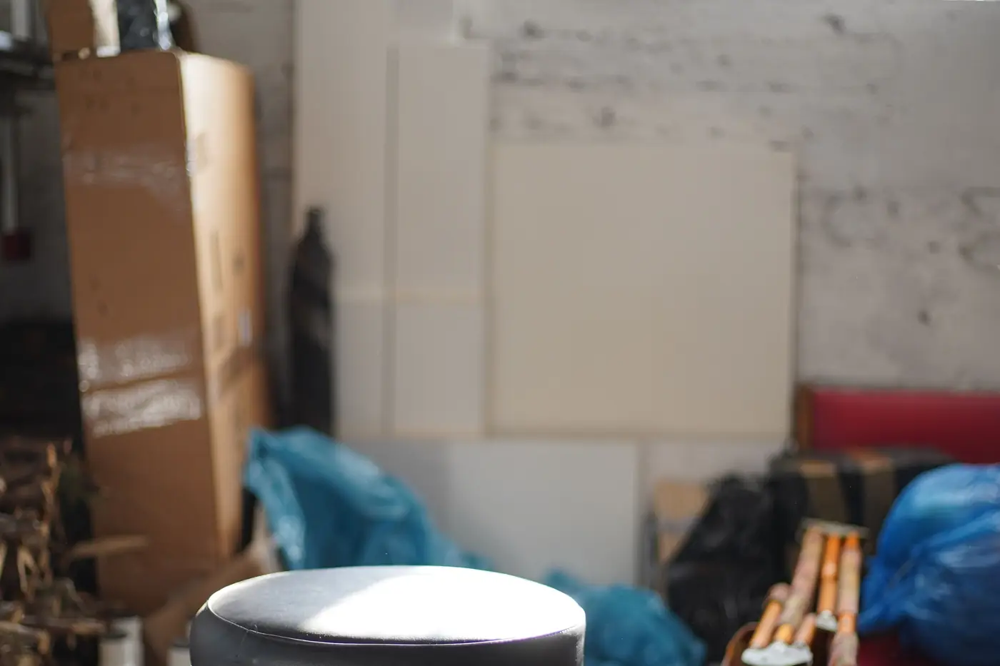

A garage cleanout in Casa Grande is volume work: we clear the entire space rather than pulling one or two items out of it. Garages, sheds, spare rooms, rental turnovers, foreclosures and estate properties. You point at what stays, we take everything else, and the floor gets swept before we leave.

It starts with a walkthrough. You mark what stays — the tool chest, the holiday bins, the box of photos — and everything else is fair game. For estate work, families usually flag a few categories to set aside rather than individual items.
Then the crew works front to back in passes. Loose material and boxes first, then shelving and furniture, then the heavy items at the back wall. A packed two-car garage in Casa Grande typically runs two to four hours with a two-person crew.
Usable goods get set aside for donation as we go rather than sorted at the landfill. The last step is a broom sweep, so you get a floor back and not just an empty room full of dust.
Casa Grande has a lot of rental and new-build turnover, and move-out piles here are bigger than average because almost nothing in Pinal County has a basement. Everything a household would store downstairs elsewhere ends up in the garage instead.
No basements. In colder parts of the country a family spreads storage across a basement, an attic and a garage. In Casa Grande the attic is unusable half the year because of heat, so the garage absorbs all of it — holiday decorations, exercise equipment, paint cans, old electronics and boxes nobody has opened since the move.
Heat also accelerates the decay. Cardboard boxes stored through several Arizona summers go brittle, paint and adhesives separate, and stored upholstery becomes a pest problem. What was orderly storage five years ago is often unsalvageable material by the time someone opens it.
That is why cleanouts here skew larger than people estimate on the phone. Most homeowners guess half a load and the actual job is closer to a full one.
| Job size | What that looks like | Typical price |
|---|---|---|
| Quarter load | One corner or a small shed | $220 – $320 |
| Half load | A packed one-car garage | $380 – $530 |
| Full load | Full two-car garage or small apartment | $625 – $775 |
| Multi-load | Whole-house or estate clear | $1,100 – $3,200 |
What raises it: dense material like tile, concrete or wet drywall that hits a weight limit before it fills the trailer. Sorting requests that slow the crew down. No driveway access, which turns every trip into a long carry.
What lowers it: pulling obvious trash into bags ahead of time, and separating anything sellable or donatable yourself. Booking the whole property at once instead of one room per week also cuts the per-load cost.
A dumpster rental makes sense when the work stretches over days and you are generating debris the whole time — a long remodel, a gut renovation, a project where you control the pace. You do all the lifting, but the container sits there as long as you need it.
A full-service cleanout wins when the job is one push and the lifting is the problem. Nobody has to load anything, there is no permit or driveway damage to worry about, and the space is usable the same day.
The deciding question is usually whether you have the labor. If the answer is one person and a bad back, a dumpster is a trap.
A packed two-car garage typically takes a two-person crew two to four hours. Smaller single-bay jobs are often done in under ninety minutes. Whole-house and estate cleanouts in Casa Grande usually run a full day and sometimes two trailer loads.
No. You mark what stays and we take the rest, sorting donations and recyclables as we load. If you want specific categories set aside for family, tell the crew during the walkthrough and they will stage those separately.
Yes. This is common for rental turnovers and estate properties in Casa Grande. We do a video walkthrough, quote from that, then send before-and-after photos when the job is finished. Payment happens remotely and you never need to be on site.
Usable furniture, appliances, tools and household goods go to local donation drop-offs rather than the landfill. Metal is separated for recycling. Only what nobody can reuse goes to disposal, which also keeps your cost down.
One walkthrough, one price, one crew. Free estimates on cleanouts anywhere in Casa Grande and Pinal County.
Call (520) 569-2190 for a Free Estimate